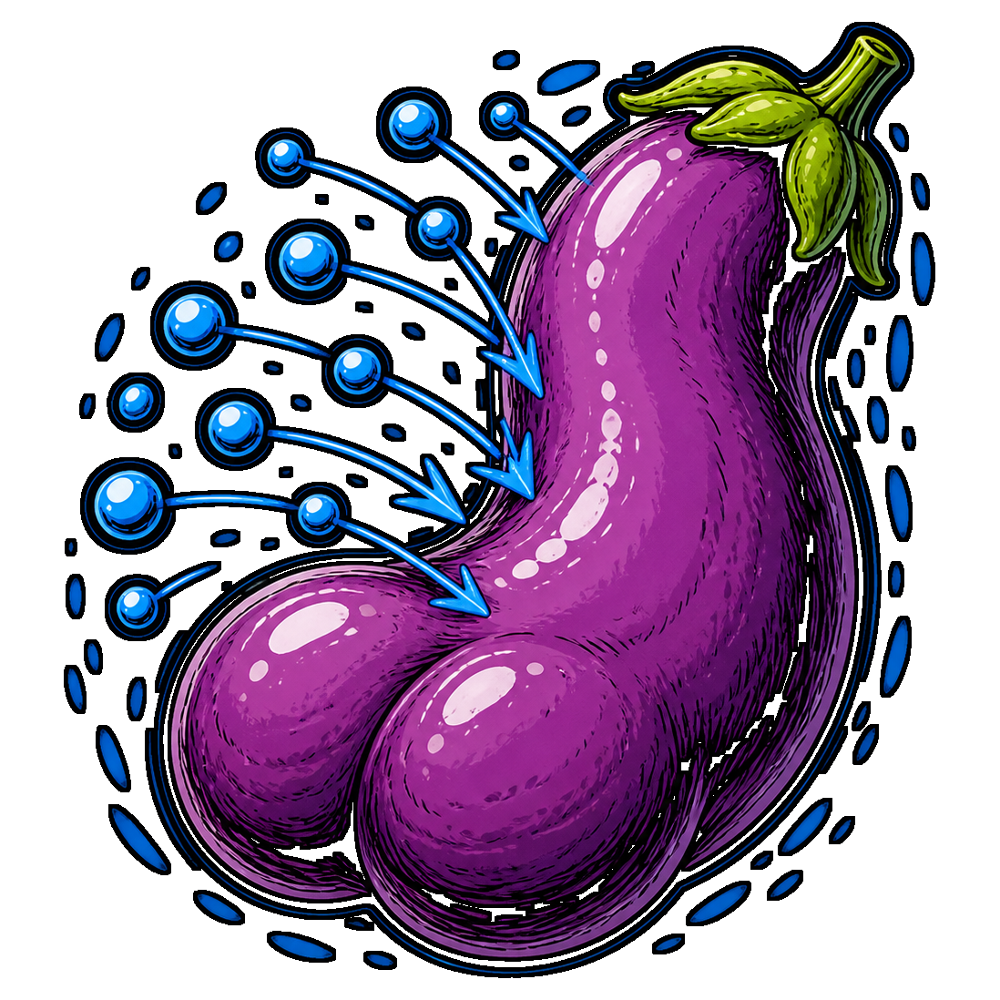

Graph reconstitution pipeline. Classifies structured JSON records into a deterministic RDF graph; emits Turtle, TriG, N-Triples, N-Quads, or JSON-LD; renders the result as an interactive HTML view.
The demo runs entirely in your browser — no server, no data leaves the page. It shows the package's JSON-LD output for a Pathfinder/AONPRD fixture, rendered as a cytoscape graph.
Given JSON records like:
{ "_type": "feat", "name": "Power Attack", "level": 1, "rarity": "common",
"_source": { "target": "aonprd", "url": "https://2e.aonprd.com/Feats.aspx?ID=750" } }and a config that lists which classifier tasks to apply, Squashage produces a deterministic RDF graph with auto-derived prefixes and an auto-built JSON-LD context. The pipeline: